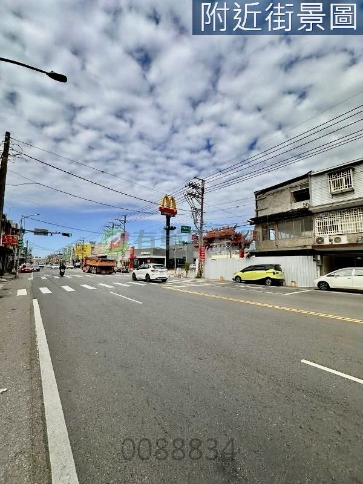

1 / 10房屋亮點
- 正 20 米民族路
- 面寬約 4.5 米
- 現況有水有電
- 近好市多
- 產權無設定負擔
- 適合開店自用
土地資料
- 型態
- 土地
- 使用分區
- 都市計畫住宅區
- 臨路
- 約 20 米
- 朝向
- 朝西北
- 位置
- 桃園市平鎮區民族路雙連一段
坪數說明
- 土地面積
- 26.5 坪
- 單價
- 52.8 萬/坪
屋況特色
＊正民族路，高可見度、高流量、高曝光率，易吸引過路客。
＊通道方便進出，適合各種行業，靈活性較高。
＊路旁店面具天然廣告效果，助於提高品牌知名度。
＊近好市多，大量採購、交通便捷，極度擁有便利的生活環境。
＊目前有電力供應（有獨立電錶）、自來水供應（有獨立水錶）、瓦斯供應（桶裝瓦斯）。
＊本土地上有未辦保存登記之地上物，點交時隨同移轉給買方；該地上物有房屋稅籍。
＊本土地有排水溝。
＊本土地目前無禁建、限建之情形；尚未申請指定建築線，目前無建築執照。
＊登記謄本記載：地上建物共０棟，他項權利部無抵押權、查封、地上權；全筆面積87.63平方公尺，由五位共有人共同持有，出售需全體共有人同意。
＊土地使用分區為都市計畫住宅區，都市計畫案為「變更高速公路中壢及內壢交流道附近特定區計畫（雙連坡附近地區）細部計畫（第一次通盤檢討）案」。
＊本土地尚未申請指定建築線，亦未確認是否符合桃園市畸零地使用自治條例之最小寬度與最小深度；能否單獨申請建築執照、建蔽率與容積率，請洽桃園市政府建築管理處確認。